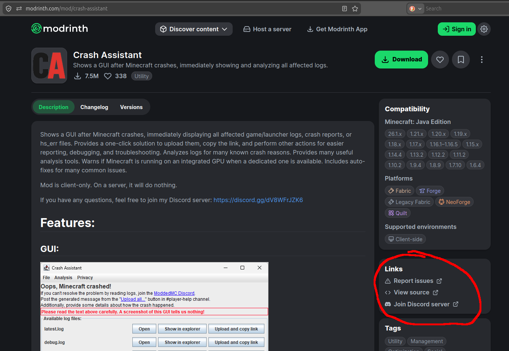
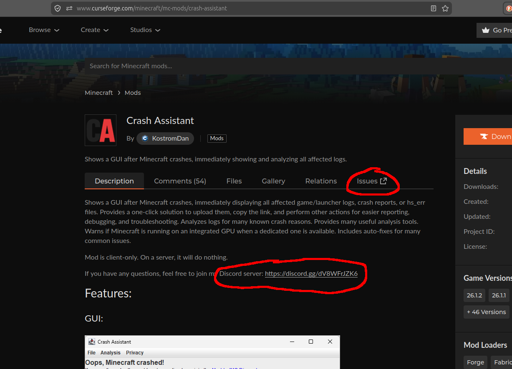

If you have only Server/TPS lag, the mobs and machines on the server are slower than normal. If you are riding a minecart/horse/pig/whatever you might not be able to dismount, or it might take some more time.
Client/FPS lag means your screen is stuttering, you get noticeably less frames. Sometimes people also call it a slideshow, especially if you get only 1-2 frames per second or less.
Your F3 screen shows some values that are interesting for debugging lag problems: The FPS: if this is below 30, you have Client/FPS lag. The TPS and MSPT: if TPS is below 20, or if MSPT is above 50 you have Server/TPS lag. The Memory/RAM allocation and usage: If the used memory is close to 100%, you should allocate more ram to Minecraft or have less stuff.
Your Task manager is also helpful. If your task manager shows that your system ram is nearly fully used, you should allocate LESS ram to Minecraft or close some programs you don't need. If your task manager shows that your system cpu is nearly fully used, you can either continue following this guide to find lag problems inside Minecraft, or close some cpu using programs you don't need.
/spark profiler start --timeout 50 to start a profiler that records stats about the cpu usage of the server thread for 50 seconds.
Since it profiles the server thread, it is useful for tps problems
mixin.feature.spam_thread_dump=true to the end of the modernfix-mixins.properties config file. This makes a thread dump in regular intervals.
Do the config changes, then restart your Minecraft, trigger the issue again, wait for 2-3 minutes so the problem gets dumped.
If that modernfix config option is not working for you (no modernfix in your pack, modernfix conflicting with some other mod, ...), create one using one of the methods described on https://www.baeldung.com/java-thread-dump.
Then look into the file and search for the stack traces following "Server thread" and "Render thread".
Sometimes when you loaded into a world, but something went wrong during crashing, "Server thread" is no longer there and you need to look for the last time Server thread appeared normally in the log.
Maybe there is some mod mentioned there, but reading them is always advisable.
If they contain something about .getChunk, this indicates they are currently getting/loading/generating a chunk.
In that case looking into the worker threads "Worker-Main- is also a good idea.

